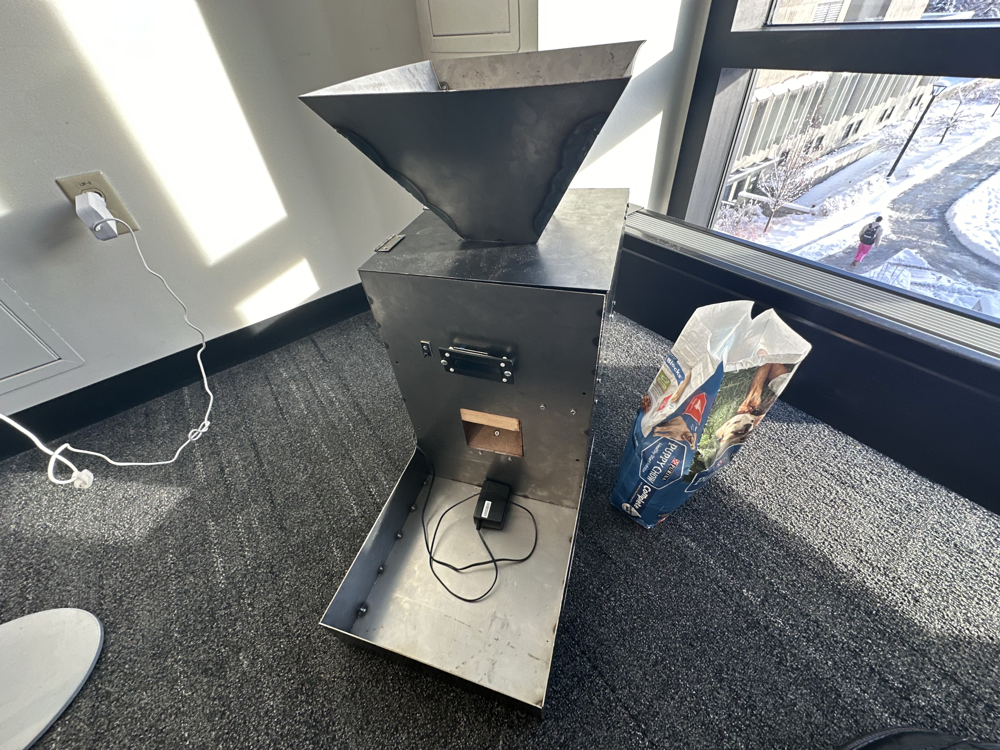

Automatic Dog Feeder
For my Engineering Projects class, we were tasked with making a disability-friendly product in groups of 4. My group decided to make an Automatic Dog Feeder, with speed settings, and made of metal for stability. It was quite the process, requiring fabrication, electrical, and coding skills to make functional. I worked on all sections of this project, ideating concepts, helping produce code, assembling the product, and making sure everything worked correctly. It was great to work in a team, and I made some great friends, as well as a product I'm proud of!

Snake
For my Computation Foundations 2 class, our final project had to use a data frame to create a game. I decided to make Snake using a linked list. It was shockingly intuative, and worked by having a linked list of cordinates. I would delete the last cordinate every tick, and then add a corinate in the direction of movement to the front of the list. All I needed from here was to make it if you touch an apple, the last cordinate does not get removed. Adding graphics, and a hard mode which adds deadly spikes with each apple eaten, and I had created snake. Click the link below to try it yourself!